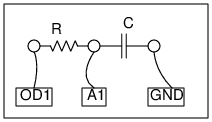

Schematic

Instructions
- Make connections as shown in the figure.
- Pressing "0 to 5V STEP" or "5 to 0V STEP" switches OD1
and captures the resulting voltage variation at A1
- Calculate RC fits the data with V = Vo exp(-t/RC)
- Repeat with different RC values.